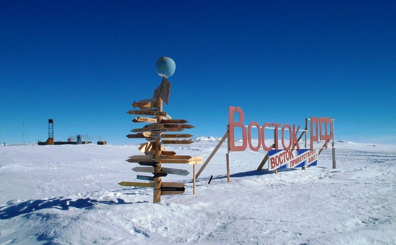
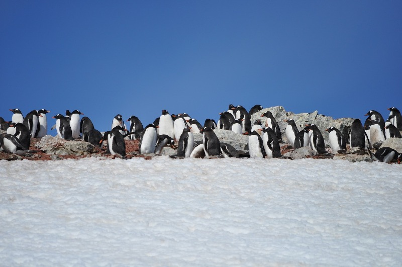

Какая она, Антарктида
Антарктида (с греческого ἀνταρκτική — противоположность Арктике) — самый южный континент на нашей планете, центр Антарктиды примерно совпадает с южным географическим полюсом. Помимо полюса холода ( температура здесь опускалась почти до -90° С), в Антарктиде располагаются точки самой низкой относительной влажности воздуха, самого сильного и продолжительного ветра и самой интенсивной солнечной радиации.
Первое судно, пересёкшее Южный полярный круг, принадлежало голландцам; им командовал Дирк Герритц, плававший в эскадре Якова Магю. Современная Антарктида ежегодно принимает новые группы исследователей, но все равно она остается единственным не освоенным материком. При территории континента более 14 миллионов км² здесь нет постоянного населения, а исследователей на различных исследовательских станциях, в зависимости от сезона, проживает от 4000 до 1000 человек.
Это обусловлено в первую очередь недружелюбным климатом, так как кроме очень низких температур погода дарит обитателям южного материка сильные ветра (могут достигать скорости 320 км\ч) и мощную солнечную радиацию. Поэтому единственными почти сухопутными обитателями Антарктиды являются пингвины, которых здесь несколько видов.
Подводный мир здесь более разнообразен (в воде температура выше) в воде водятся различные млекопитающие, рыба, и другие представители фауны.

Из растений здесь произрастают только различные мхи и лишайники.

Десять самых интересных фактов об Антарктиде
В Антарктиде находится 80% всей пресной воды планеты
Вес льда так велик, что продавил поверхность материка на 500 метров вглубь, а его таянье вызывает изменение гравитации
Eсли все льды Антарктиды растают, уровень мирового океана поднимется на 60 метров, а соответственно материковая часть планеты заметно сократится
Оникс - единственная река Антарктиды достигающая в длину 20 километров, течет всего 2 месяца
Антарктида самый пустынный и сухой материк
В некоторых местах Антарктиды не было осадков примерно 2 миллиона лет
На материке есть 7 христианских церквей, одна из них православная
Самая высокая температура наблюдаемая на Антарктиде не превышала 15° С
В Антарктиде есть незамерзающие озера
Каждому человеку работающему в Антарктиде раньше удаляли зубы мудрости и аппендикс, из-за отсутствия врачей